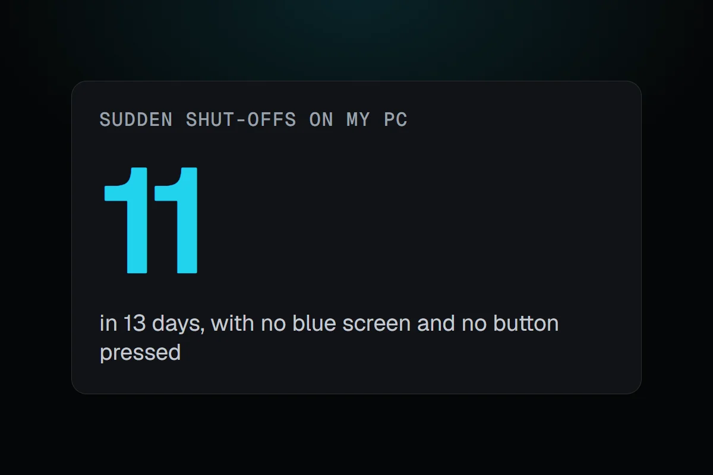
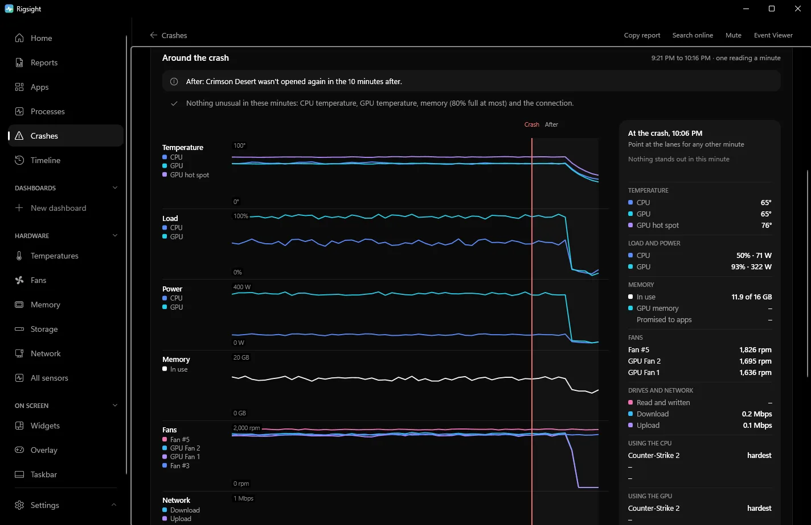

PC problems · Crashes
PC restarts randomly while gaming? Rule things out first
My PC went off eleven times in two weeks with no blue screen, and the minutes before each one ruled out heat and the power supply. How to check why a PC randomly restarts while gaming, and how to tell heat, the power supply, tuning and Windows apart.

The short answer
A PC that restarts randomly while gaming is most often the power supply, an unstable overclock or memory profile, or heat. Check why first. Event Viewer's System log shows Kernel-Power 41 for a sudden stop and User32 1074 for a planned restart. Turn off automatic restart to catch any hidden blue screen.
Between 17 and 29 September my PC went off eleven times without shutting down properly, five of them on 29 September alone. There was no blue screen and nobody touched the power button. When your PC restarts randomly while gaming, the first job is the one I had. Before you replace anything, use what happened in the minutes before to rule causes out.
How RigSight caught it
RigSight's Crashes page lists every sudden shut-off and blue screen, read from Windows' own records, and on its first run it reads them from up to 90 days back. Each shut-off is timed by the last minute RigSight recorded, not by Windows' own guess, which can be some minutes early.
For six of my eleven, RigSight had already been recording the minutes before. In every one the graphics card was between 1 and 18% busy, drawing 33 to 55 W. The CPU was under 65° and the GPU around 50°. So whatever switched my PC off, it wasn't heat, and it wasn't a power supply struggling under a game. Windows' record of all eleven shows no blue screen code and no power button press. That's as far as the records go, and RigSight doesn't claim more than that.
Each shut-off gets a cause with one word for how sure RigSight is.
- A shut-off under heavy load reads Possibly mains or power supply, because from inside the PC those two look the same.
- One while a part was above your alert temperature reads Possibly heat.
- An error the hardware couldn't correct, logged around it, makes it Likely a hardware fault.
- A held power button reads Confirmed.
- Only a shut-off while the PC was doing little, with no button press and nothing logged, is called Likely a power cut. Those are counted apart, so they don't hide the PC's own problems.
- A PC running again within two minutes reads as a power dip or a reset.

Open a shut-off to see the 45 minutes before it, minute by minute. It shows CPU and GPU temperatures, load, how many watts the GPU was drawing, memory and fans, with the game in front. A shut-off at 300 W and normal temperatures points at power, and one at 90° points at heat. The Temperatures graph leaves a gap where nothing was recorded and says whether the PC was off, shut off suddenly, crashed or was asleep. On the Games page, the play itself says it ended in a shut-off or a power cut. CPU temperature and power need RigSight running with admin rights. RigSight is free and open source.
Why a PC restarts randomly while gaming
These are the usual causes, and how to tell them apart.
- Heat. CPUs and GPUs protect themselves by slowing down, and if that isn't enough the PC switches off. A part close to its maker's limit in the minute before is your answer. Recent desktop CPUs list limits around 89 to 100°C. Intel gives 100°C for the Core i9-14900K, and AMD 95°C for most Ryzen 7000 chips and 89°C for the X3D ones. Check the page for your model. Dust in the filters, a dead fan or a pump that stopped are the common reasons.
- The power supply. If temperatures were fine, this is the top suspect for a PC that randomly shuts off while gaming. Games push the graphics card and CPU to full power at once, and modern cards can draw short spikes above their rated power. A supply that is too small or worn out trips its protection and the PC goes off, exactly like a power cut. The signs are that it only happens under heavy load, often in the same demanding games or scenes, never at the desktop.
- Tuning. An overclock, an undervolt, Curve Optimizer or an XMP or EXPO memory profile can be stable for months and then not, after a BIOS update or on a warm day. Unstable tuning can reset the PC with no blue screen at all. This is the cheapest thing to rule out.
- Windows itself. Restarts after an update come from Windows Update, and you'll see an event 1074. Restarts at shutdown, sleep or wake point to Fast Startup, sleep settings, the BIOS or chipset drivers rather than to your game.
- The mains. A power cut or dip switches everything off at once. If the lights flickered or other devices lost power too, it wasn't the PC.
How to check why your PC randomly restarted, and fix it
First make sure it really was a crash. Windows restarts on purpose for updates, and a PC that "turned off" might have gone to sleep.
- Right-click Start and open Event Viewer.
- Go to Windows Logs > System and click Filter Current Log.
- Type
41,1001,6008,1074in the event IDs box and click OK. - Look at the entries around the time it restarted.
- Event 1074 from User32 is a planned restart. It names the program that asked for it, often Windows Update. It is not a crash.
- Event 1001 from BugCheck is a blue screen, with its stop code. Read blue screen of death causes next.
- Event 41 from Kernel-Power means Windows started again after not shutting down cleanly. Open its Details tab. A
BugcheckCodeof 0 with no 1001 means the PC lost power or was reset. Kernel-Power 41 explains every field. - Event 6008 from EventLog gives the time Windows last noted it was running before the unexpected shutdown. Treat it as roughly right, since it can be some minutes early.
Reliability Monitor shows the same thing on a calendar. Type reliability into Start and open View reliability history.
Then turn off automatic restart, so a hidden blue screen stays on screen. On current Windows 11 the crash screen is black and stays up for only about two seconds, so in a fullscreen game you may only see black and then the boot logo.
- Open Settings > System > About and click Advanced system settings.
- Under Startup and Recovery, click Settings.
- Clear Automatically restart under System failure and click OK.
If the next one still goes straight to black with no blue screen, Windows never got the chance, and you're looking at power, heat or a hard reset. Then work through the fixes in this order.
- Reset all tuning. Load the BIOS defaults, turn off XMP or EXPO for a test, and reset any GPU tool such as MSI Afterburner to default. Play the game that restarts most.
- Watch temperatures in that same game. If they're high, clean the dust filters and check that every fan and the pump are running.
- Plug the PC straight into a wall socket. Reseat both ends of the power supply's cables, and the graphics card's power plugs. If the card takes several 8-pin plugs, check the manuals for the card and the power supply. Some ask for a separate cable for each plug.
- Compare your power supply's wattage with what your graphics card maker recommends for the card. If it's close, or the supply is old, test with another one.
- Set Active hours in Settings > Windows Update > Advanced options so update restarts don't land on your evenings.
- If the restarts are at idle or overnight, turn off Fast Startup in Control Panel > Hardware and Sound > Power Options > Choose what the power buttons do > Change settings that are currently unavailable and see whether they stop.
- Check for hardware errors. Filter the System log by the event source
WHEA-Logger. Errors the hardware couldn't correct point at the CPU, memory or motherboard, or at tuning that's too tight.
Turn off automatic restart now, then reset your tuning to defaults and play the game that restarts most. If it still goes off with no blue screen and your temperatures were normal just before, the power supply is the part to test next.
Questions people ask
Why does my PC restart randomly with no blue screen?
Either Windows had no time to show one, because power was lost, or it showed one and restarted straight away. Turn off Automatically restart under Startup and Recovery to catch the second kind. If Kernel-Power 41 has a BugcheckCode of 0, it was a real loss of power or a reset, not a blue screen.
My PC randomly shuts off while gaming but it's not overheating. Why?
Then the power supply and tuning are the main suspects. A supply that can't handle the graphics card's short power spikes switches off to protect itself, and an unstable overclock, undervolt or XMP or EXPO profile can reset the PC with no blue screen. Reset tuning to defaults first, since it costs nothing.
Why does my PC restart randomly after a Windows update?
Look for event 1074 from User32 in the System log at that time. If it's there, Windows restarted on purpose to finish an update. Set your Active hours in Windows Update so it doesn't happen while you play. If it's a Kernel-Power 41 instead, a new driver from the update is worth suspecting.
Why does my PC restart randomly when idle?
Restarts at idle point away from heat and the power supply's limit and toward the mains, sleep and wake problems, or memory and CPU tuning that is unstable at low load. Check whether other devices flickered, turn off Fast Startup for a test, and try with XMP or EXPO off.